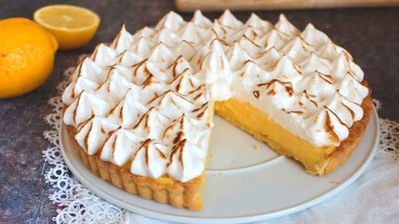

El clásico Lemon Pie
Es el preferido de los que les gusta lo dulce pero no lo empalagoso. El
lemon pie es más bien una tarta, es decir, una base de masa y un
relleno. Como su nombre lo indica está hecha con limón, más bien con el
jugo del limón, azúcar y huevos. Todo eso mezclado hace el famoso
custard, el relleno cremoso amarillo que es tan típico del lemon pie.
Ingredientes
Para la masa
- 200g. de harina 0000
- 50g. de azúcar
- 1 huevo
- 100g. de manteca
Para la crema
- 150cc. de jugo de limón
- 1 cucharada de ralladura de limón
- 4 yemas
- Leche condensada
Para el merengue
Instrucciones
- Precalentar el horno a temperatura media (180 °C)
-
Procesar o mezclar ligeramente la harina, el azúcar y la manteca
fría cortada en cubitos, hasta formar un arenado. Agregar el huevo y
unir la masa sin trabajarla mucho. Envolver en
film
y llevar a la
heladera por 30 minutos aproximadamente
-
Estirar sobre una mesada enharinada y tapizar un molde para tarta
desmontable de 22 cm de diámetro. Cocinar durante 20 minutos o hasta
que comience a dorarse
-
Mezclar la Leche Condensada Nestlé con 4 yemas, 150cc de jugo de
limón y la ralladura. Unir bien y verter sobre la masa precocida.
Cocinar en horno moderado durante 15 minutos
-
Colocar el azúcar en una cacerolita y cubrir con apenas con agua.
Cocinar hasta obtener un
merengue italiano
-
Unos minutos antes del punto del almíbar, comenzar a batir las
claras. Cuando empiecen a formar picos, añadir gota a gota el
almíbar caliente sin dejar de batir hasta que se enfríe
- Decorar con el merengue y gratinar